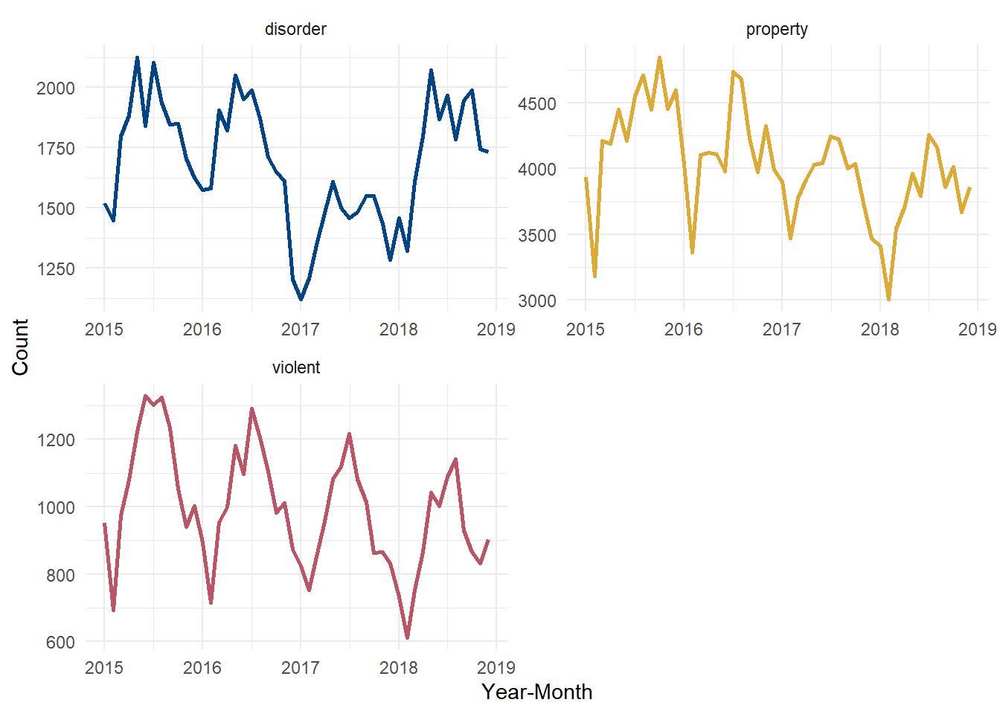
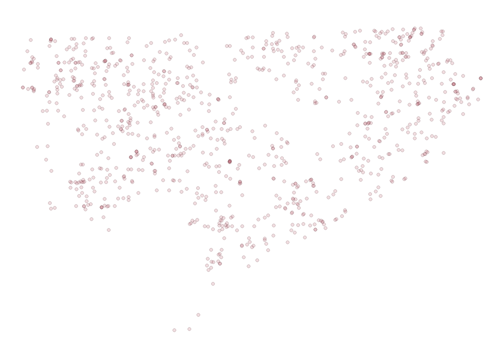

library(tidyverse)
library(duckdb)
library(sf)
wd <- "../Documents/blog/data/"
file_name <- "crime.csv"
dir <- paste0(wd,file_name)The One Big Thing I Didn’t Learn In Grad School
When I was in grad school working on my Ph.D. I learned a lot about math, statistics, research methods, and experimental design (among a LOT of other things). For a good part of my time as a grad student I also worked doing crime analysis at the Detroit Police Department for Ceasefire and Project Green Light. However, looking back, I realize one skill I never learned, that has become invaluable today, is something I never would have guessed: SQL. Yes, that SQL.
For my academic friends who aren’t in the know, SQL stands for “Structured Query Language” and is the number one way that analysts interface with data stored in databases. SQL is great because it is a fast and efficient way to pull data out of very large and complex tables. In addition it doesn’t require you to read an entire table into memory. For reference, at my day job I typically work with medical claims data tables with billions of records. It is simply not possible (nor recommended) to work with the entire table in-memory.
During grad school my typical workflow was to try and load a single large data table into R and work with it directly, or manually break it into smaller .csv files. Not only is this highly inefficient, it also makes it difficult to replicate the workflow later. I think being able to work with large complex datasets is increasingly important for researchers who want to take control of their workflow.
DuckDB and R
There are a lot of different ways to interface with SQL. In earlier projects I’ve used a SQLite database to manage a very large dataset and then query it from R. However, this approach requires you to create a .sqlite database and adds a bit of up-front work. Often times I might just have one or two very large tables where this approach is a bit overkill. For example, working with raw NIBRS data entails only a few important tables (victim, offender, offense) but each table is far too large to work with directly.
DuckDB is a great option here because it has a ton of very useful functions that allow you to read directly from a .csv or other type of file (JSON, Parquet,etc…). In addition this can work directly in R using a client API. For an academic, we often only have simple tables like these to work with and so having an option that we can easily integrate into our workflow is really appealing.
Setting it up
As an example, I have some crime data from Detroit that I used for a project a few years back. The size of this file is large (although not that large). However it is big enough that it might be reasonable to pull only a subset of the data into memory at a time. Here’s a perfect use-case for duckDB. Below, I start by loading the duckdb library and setting up the working directory of the file location dir as a string. This will make it a bit cleaner to read and pass in to our queries when we start working.
We then set up a connection object via dbConnect and use duckdb() as the connector. After we do that all we need to do is built a SQL string and pass it in. The script below reads all the columns (SELECT *) from the table listed in the directory crime.csv and pulls only the top 10 rows. And this builds the connection and executes the query:
con = dbConnect(duckdb())
dbGetQuery(con, sprintf("SELECT * FROM read_csv('%s') LIMIT 10", dir)) category offense crno date address
1 FRAUD FRAUD (OTHER) 1501070062 2015-01-07 02600 E 8MILE
2 STOLEN VEHICLE VEHICLE THEFT 1501310051 2015-01-31 15300 VAUGHAN
3 FRAUD FRAUD (OTHER) 1503160171 2015-02-01 10000 GEORGIA
4 STOLEN VEHICLE VEHICLE THEFT 1502020211 2015-02-02 14900 E JEFFERSON
5 FRAUD FRAUD (OTHER) 1504090191 2015-02-02 20500 SAN JUAN
6 ASSAULT INTIMIDATION 1502090035 2015-02-09 14400 FREELAND
7 STOLEN VEHICLE VEHICLE THEFT 1502240058 2015-02-23 15700 KENTFIELD
8 FRAUD FRAUD (OTHER) 1502240128 2015-02-24 19300 PINEHURST
9 FRAUD FRAUD (OTHER) 1502270221 2015-02-25 00100 SEWARD
10 FRAUD FRAUD (OTHER) 1502270182 2015-02-25 19100 KEYSTONE
lon lat yr_mon crime_type
1 -83.0759 42.4466 2015-01-01 property
2 -83.2380 42.4021 2015-01-01 property
3 -83.0042 42.3961 2015-02-01 property
4 -82.9388 42.3746 2015-02-01 property
5 -83.1480 42.4453 2015-02-01 property
6 -83.1846 42.3945 2015-02-01 disorder
7 -83.2407 42.4055 2015-02-01 property
8 -83.1670 42.4333 2015-02-01 property
9 -83.0786 42.3748 2015-02-01 property
10 -83.0510 42.4341 2015-02-01 propertyVoila! As an aside, if you are more familiar with dplyr’s syntax, the equivalent code would be. This is a bit less verbose, but requires you to read in the entire table before selecting just the top 10 rows. It is vastly less efficient and slow in cases where the table sizes become very large.
read_csv(dir) %>%
slice(1:10)Rows: 321983 Columns: 9
── Column specification ────────────────────────────────────────────────────────
Delimiter: ","
chr (4): category, offense, address, crime_type
dbl (3): crno, lon, lat
date (2): date, yr_mon
ℹ Use `spec()` to retrieve the full column specification for this data.
ℹ Specify the column types or set `show_col_types = FALSE` to quiet this message.# A tibble: 10 × 9
category offense crno date address lon lat yr_mon crime_type
<chr> <chr> <dbl> <date> <chr> <dbl> <dbl> <date> <chr>
1 FRAUD FRAUD … 1.50e9 2015-01-07 02600 … -83.1 42.4 2015-01-01 property
2 STOLEN V… VEHICL… 1.50e9 2015-01-31 15300 … -83.2 42.4 2015-01-01 property
3 FRAUD FRAUD … 1.50e9 2015-02-01 10000 … -83.0 42.4 2015-02-01 property
4 STOLEN V… VEHICL… 1.50e9 2015-02-02 14900 … -82.9 42.4 2015-02-01 property
5 FRAUD FRAUD … 1.50e9 2015-02-02 20500 … -83.1 42.4 2015-02-01 property
6 ASSAULT INTIMI… 1.50e9 2015-02-09 14400 … -83.2 42.4 2015-02-01 disorder
7 STOLEN V… VEHICL… 1.50e9 2015-02-23 15700 … -83.2 42.4 2015-02-01 property
8 FRAUD FRAUD … 1.50e9 2015-02-24 19300 … -83.2 42.4 2015-02-01 property
9 FRAUD FRAUD … 1.50e9 2015-02-25 00100 … -83.1 42.4 2015-02-01 property
10 FRAUD FRAUD … 1.50e9 2015-02-25 19100 … -83.1 42.4 2015-02-01 property Other Tricks - Aggregations and Plotting
Of course SQL is a very robust scripting language that allows for both simple and complex operations. We can do any kind of reporting and aggregations. For example, if we wanted some basic information about crime at the year-month level we could do:
qu =
"SELECT
crime_type,
yr_mon,
COUNT(crime_type) AS N
FROM
read_csv('%s')
GROUP BY
crime_type,
yr_mon
ORDER BY
crime_type,
yr_mon"
tab <- dbGetQuery(con, sprintf(qu, dir))
head(tab) crime_type yr_mon N
1 disorder 2015-01-01 1518
2 disorder 2015-02-01 1447
3 disorder 2015-03-01 1797
4 disorder 2015-04-01 1884
5 disorder 2015-05-01 2125
6 disorder 2015-06-01 1839This performs the group-by and counts out of memory and then moves the aggregated table right into R as a dataframe. And since the result is just a dataframe, we can pipe it directly into a ggplot visualization, like:
dbGetQuery(con, sprintf(qu, dir)) %>%
ggplot() +
geom_line(aes(x = yr_mon, y = N, color = crime_type), linewidth = 1) +
facet_wrap(~crime_type, scales = "free", ncol = 2) +
labs(x = "Year-Month", y = "Count") +
scale_color_manual(values = c('#004488', '#DDAA33', '#BB5566')) +
theme_minimal() +
theme(legend.position = 'none')
Similarly, this applies to other functions like creating spatial objects. What if we wanted to plot only the violent crimes from the first month of 2015?
qu =
"SELECT *
FROM
read_csv('%s')
WHERE
crime_type = 'violent'
AND
datepart('year', yr_mon) = 2015
AND
datepart('month', yr_mon) = 1
"
st_as_sf(dbGetQuery(con, sprintf(qu, dir)),
coords = c('lon', 'lat'),
crs = 4326) %>%
ggplot() +
geom_sf(shape = 21, alpha = .2, fill = '#BB5566') +
theme_void()
This is pretty cool too, because we have access to all the base functions available in duckDB. For example, there are a bunch of date handling functions that make these types of queries a lot easier than other base SQL languages. Here, the datepart function lets us split up date objects very easily within SQL.